library(tidyverse)
library(patchwork)3 O modelo de distribuição normal
Pacotes, funções e base de dados utilizadas no capítulo
Pacotes:
Funções: normal_empirica_gg.r
source('scripts/normal_empirica_gg.r')Base de dados: altura2022.csv e rhamdioglanis.csv
ie = read_delim("datasets/altura2022.csv")
rh <- read_delim('datasets/rhamdioglanis.csv', delim = ';',
locale = locale(decimal_mark = ','))Técnicas de estatística descritiva nos permitem entender os padrões resultantes de fenômenos que já aconteceram (veja: Descrição e Visualização de Dados). A inferência estatística nos fornece elementos para fazer predições sobre o que poderá acontecer. A predição se torna possível pelo uso de modelos probabilísticos, entre os quais está a distribuição normal de probabilidades.
Modelos probabilísticos são definidos por funções de probabilidade e as variáveis descritas por estes modelos são denominadas de variáveis aleatórias. Uma variável aleatória resulta de um experimento aleatório como i) medir a altura de uma pessoa; ii) tomar a temperatura em uma cidade; ii) medir a taxa de crescimento de uma bactéria; etc. A questão relevante nestes experimentos é que antes de serem realizados, não temos certeza sobre qual serão seus resultados.
Embora não saibamos quais serão os resultados de um experimento aleatório com exatidão, podemos nos basear em algum modelo probabilidades para prever a chance de um resultado observado estar dentro de determinados limites. Neste sentido, o papel de um modelo probabilístico é, delimitar a incerteza ao redor dos resultados possíveis de um experimento aleatório.
Ao medir a altura de uma pessoa podemos supor que, possivelmente, o resultado ficará abaixo de \(1,9\) m. Supomos isto pois temos conhecimento de que a altura de maior parte das pessoas está abaixo deste limite. Se quisermos atribuir um valor de probabilidade a esta suposição devemos:
Assumir que a variável altura segue um determinado modelo de probabilidades, e
Utilizar dados de um experimento para estimar os parâmetros deste modelo a fim de calcularmos a probabilidade \(P(X \le 1,9)\).
Neste capítulo iremos discutir pela primeira vez o modelo de distribuição normal e aprenderemos como encontrar estas probabilidades.
A distribuição normal de probabilidades descreve uma curva em forma de sino também chamada de distribuição gaussiana. Um dos motivos que a tornaram central em estatística foi a percepção de que o comportamento de muitos fenômenos naturais podem ser descritos adequadamente por este modelo teórico. Veja por exemplo, o histograma de alturas de \(110\) estudantes de uma turma de Introdução a Estatística do curso de Bacharelado Interdisciplinar em Ciências do Mar (UNIFESP). A linha vermelha sobre este histograma representa a distribuição normal teórica. À direita desta figura está um histograma da temperatura média anual em uma cidade americana, onde também foi sobreposta uma curva normal teórica. Embora estes dados descrevam fenômenos completamente distintos, a distribuição normal se adequa razoavelmente bem aos dois histogramas.
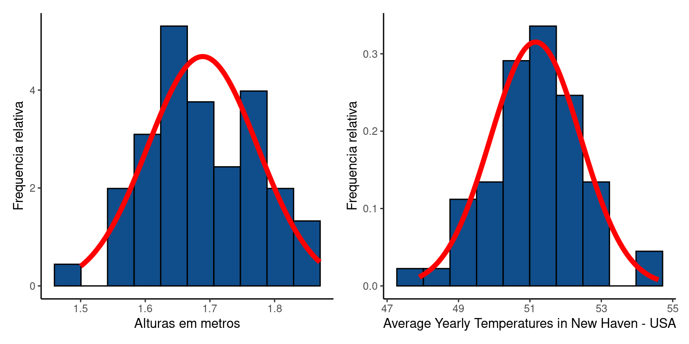
O segundo motivo que torna a distribuição normal uma das mais importantes em estatística será nosso tema de estudo neste e nos próximos capítulos, pois a distribuição normal surge como o modelo esperado para a distribuição das médias amostrais sob determinadas condições (Capítulo 4), o que nos permite utilizar uma variedade de procedimentos analíticos no campo da inferência e testes de hipótese.
3.1 O modelo normal de probabilidades
O modelo normal de probabilidades é uma função matemática dada por:
\[f(x) = \frac{1}{\sqrt(2\pi\sigma^2)}e^{-\frac{1}{2}(\frac{x-\mu}{\sigma})^2}, x \in \mathbb{R} | -\infty \le y \le +\infty\]
A expressão envolve as quantias \(\mu\) e \(\sigma\), definidas como os parâmetros da distribuição que representam respectivamente, sua média e o desvio padrão. Para dizer que uma variável aleatória \(X\) tem distribuição normal por meio da expressão:
\(X \sim \mathcal{N}(\mu,\,\sigma)\)
Esta expressão diz de \(X\) é normalmente distribuída (\(\mathcal{N}\)) e que esta distribuição tem parâmetros \(\mu\) e \(\sigma\).
A média de uma distribuição normal é o ponto central da curva e o desvio padrão mede o espalhamento das observações ao redor de \(\mu\). Em um fenômeno descrito por valores baixos de \(\sigma\), a maioria das observações estará próxima a \(\mu\), enquanto para valores altos de \(\sigma\) as observações estarão mais distantes de \(\mu\). Deste modo, podemos alterar o formato da distribuição normal alterando seu parâmetro de posição (i.e. a média \(\mu\)) e de dispersão (i.e. o desvio padrão \(\sigma\)).
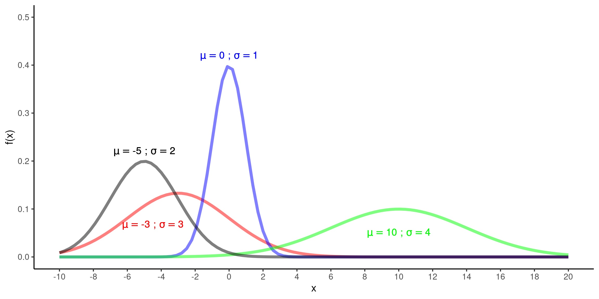
Se as observações sobre um determinado fenômeno sugerem um padrão em forma de sino, podemos buscar a melhor combinação de \(\mu\) e \(\sigma\) e descrever o fenômeno por meio de um modelo normal. Ao fazer isto, a distribuição normal nos ajuda a calcular as probabilidade da ocorrência de eventos futuros estarem em diferentes faixas de valores. No caso das alturas dos alunos por exemplo, vemos que a probabilidade de um aluno ter mais de \(2\) metros ou menos de \(1,5\) metros é extremamente baixa. Assumindo um modelo de distribuição normal para a distribuição de alturas, podemos utilizar o conjunto de dados para estimar os parâmetros da população e calcular quais seriam estas probabilidades.
Um pouco de história
Alguns atribuem a proposição deste modelo normal a Abraham de Moivre, um matemático Francês que chegou a a distribuição normal como uma aproximação a distribuição binomial em seu livro The Doctrine of Chances em \(1718\). A distribuição normal de probabilidades é simétrica, ou seja, os valores extremos são igualmente representados acima e abaixo da região central (média). Você poderá encontrar o termo bell curve em inglês, devido à sua forma de sino, ou ainda distribuição gaussiana em homenagem a Carl Friedrich Gauss um dos mais importantes matemáticos do século XXI. Gauss lidou com a distribuição normal quando desenvolveu a Teoria da distribuição dos erros observacionais no contexto do Método dos Mínimos Quadrados em \(1823\).
3.2 Entendendo a função normal
A função \(f(x) = \frac{1}{\sqrt(2\pi\sigma^2)}e^{-\frac{1}{2}(\frac{x-\mu}{\sigma})^2}\) é uma função de densidade de probabilidade. Antes de aplicar esta distribuição para encontrar valores de probabilidade, vamos aprender simplesmente para descrever a funções de densidade assumindo valores particulares de \(\mu\) e \(\sigma\). Para isto, vamos tentar simular o histograma de alturas similar ao da Figura 3.1. Vamos assumir que a distribuição de alturas tenha a seguinte media e desvio padrão:
\(\mu = 1.7\) metros
\(\sigma = 0.09\) metros
Para uma determinada altura \(x = 1.6\) metros, a \(f(x)\) assume o valor:
\(f(1.6) = \frac{1}{\sqrt(2\pi \times0.09^2)}e^{-\frac{1}{2}(\frac{1.6 - 1.7}{0.09})^2} = 2.391\)
Este resultado corresponde ao ponto \(y\) no gráfico da distribuição normal (Figura 3.3) em que \(x = 1.6\). Podemos encontar \(f(x)\) para quaisquer valores dentro dos reais \(\mathbb{R}\) entre \(-\infty\) e \(+\infty\).
Assim, se calcularmos \(f(x)\) para diferentes pontos em \(x\) teremos um esboço da função de densidade normal. Na Figura 3.3, por exemplo, apresentamos \(f(x)\) para os valores:
\(X = 1.4, 1.45, 1.5, 1.55, 1.6, 1.65, 1.7, 1.75, 1.8, 1.85, 1.9, 1.95, 2\)
assumindo \(\mu = 1.7\) e \(\sigma = 0.09\)
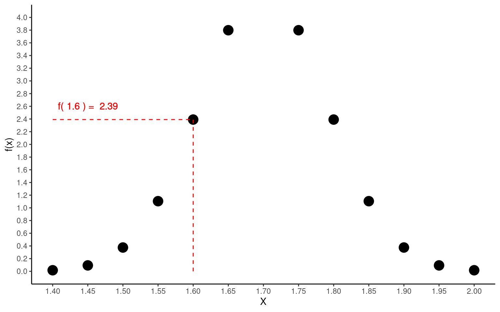
3.2.1 Calculando de \(f(x)\) no R: a função dnorm()
No R, os resultados acima podem ser obtidos com a função dnorm(), que fornece um modo simples para calcularmos \(f(x)\) na distribuição normal. Nesta função a letra ‘d’ vem de densidade da distribuição normal.
Para encontrar \(f(x)\) para um dado valor fazemos simplesmente:
mu <- 1.7
dp <- 0.11
dnorm(1.5, mean = mu, sd = dp)[1] 0.6945048Se quisermos obter \(f(x)\) para múltiplos valores de \(x\) podemos fazer:
x <- c(1.4, 1.5, 1.6, 1.7)
dnorm(x, mean = mu, sd = dp)[1] 0.0879777 0.6945048 2.3991470 3.62674803.3 Cálculo de probabilidade com a função normal de densidade
Encontrar a probabilidade de uma variável aleatória \(X\) estar dentro de uma deteminada faixa de valores significa fazer predições a respeito da probabilidade de ocorrência de uma observação futura. Por ser uma função de probabilidade, a área abaixo de \(f(x)\) na distribuição normal é igual a \(1\).
\[P(-\infty \le X \le +\infty) = \int_{-\infty}^{+\infty}f(x) dx = 1\]
Assim, se desejamos obter probabilidade de uma variável estar dentro de um determinado limite, devemos calcular a área abaixo da curva para este limite. Por exemplo, a probabilidade de uma observação em \(X\) estar entre \(x_1\) e \(x_2\) será:

3.3.1 Calculando probabilidades no R: a função pnorm()
Usando o R, a probabilidade de amostrarmos um aluno que tenha entre menos de \(1.5\) metros pode ser obtida por meio da função pnorm:
mu <- 1.7
dp <- 0.11
pnorm(q = 1.5, mean = mu, sd = dp, lower.tail = TRUE)[1] 0.03451817
Argumentos da função:
q: o valor de \(x\)
mean: média \(\mu\) da função normal
sd: desvio padrão \(\sigma\) da função normal
lower.tail: se a função irá retornar a probabilidade abaixo (TRUE) ou acima (FALSE) de q
veja o menu de ajuda digitando ?pnorm no Console do R
Se quisermos encontrar a probabilidade \(P(X \ge 1.5)\) alteramos o parâmetro lower.tail
pnorm(q = 1.5, mean = mu, sd = dp, lower.tail = FALSE)[1] 0.9654818Se desejamos obter a probabilidade de \(x\) estar entre \(1.5\)m e \(1.7\)m podemos fazer: \[P(1.5 \le X \le 1.7) = P(X \le 1.7) - P(X \le 1.5)\]
No R temos:
p1 <- pnorm(q = 1.7, mean = mu, sd = dp, lower.tail = TRUE)
p2 <- pnorm(q = 1.5, mean = mu, sd = dp, lower.tail = TRUE)
pfinal <- p1 - p2
pfinal[1] 0.4654818ou simplesmente:
diff(pnorm(q = c(1.7, 1.5),
mean = mu,
sd = dp,
lower.tail = TRUE)
)[1] -0.4654818Aqui estão representados cada um dos intervalos calculados.
Code
dfc <- data.frame(X = seq(0,sup, length = 10000)) %>%
mutate(dx = dnorm(X, mean = mu, sd = dp))
gc1 <- ggplot(dfc, mapping = aes(y = dx, x = X)) +
stat_function(fun = dnorm, args = list(mean = mu, sd = dp)) +
geom_area(data = subset(dfc, X <= 1.7), aes(y = dx),
fill = "#eb4034", color = NA, alpha = 0.5) +
scale_x_continuous(
name = 'X',
limits = c(1.4,2),
breaks = seq(1.4, 2, by = 0.05)) +
ylab('f(x)') +
annotate(geom = 'text', x = 1.5, y = 3,
label = bquote("P(X" <= ~ 1.7 ~")" == .(round(p1,3))),
color = '#eb4034') +
theme_classic()
gc2 <- ggplot(dfc, mapping = aes(y = dx, x = X)) +
stat_function(fun = dnorm, args = list(mean = mu, sd = dp)) +
geom_area(data = subset(dfc, X <= 1.5),
aes(y = dx), fill = "#eb4034", color = NA, alpha = 0.5) +
scale_x_continuous(
name = 'X',
limits = c(1.4,2),
breaks = seq(1.4, 2, by = 0.05)) +
ylab('f(x)') +
annotate(geom = 'text', x = 1.5, y = 3,
label = bquote("P(X" <= ~ 1.5 ~")" == .(round(p2,3))),
color = '#eb4034') +
theme_classic()
gc3 <- ggplot(dfc, mapping = aes(y = dx, x = X)) +
stat_function(fun = dnorm, args = list(mean = mu, sd = dp)) +
geom_area(data = subset(dfc, X >= 1.5 & X <= 1.7 ),
aes(y = dx), fill = "#eb4034", color = NA, alpha = 0.5) +
scale_x_continuous(
name = 'X',
limits = c(1.4,2),
breaks = seq(1.4, 2, by = 0.05)) +
ylab('f(x)') +
annotate(geom = 'text', x = 1.5, y = 3,
label = bquote("P(" ~ 1.5 <= ~ "X" <= ~ 1.7 ~")" == .(round(pfinal,3))),
color = '#eb4034') +
theme_classic()
gc1 / gc2 / gc3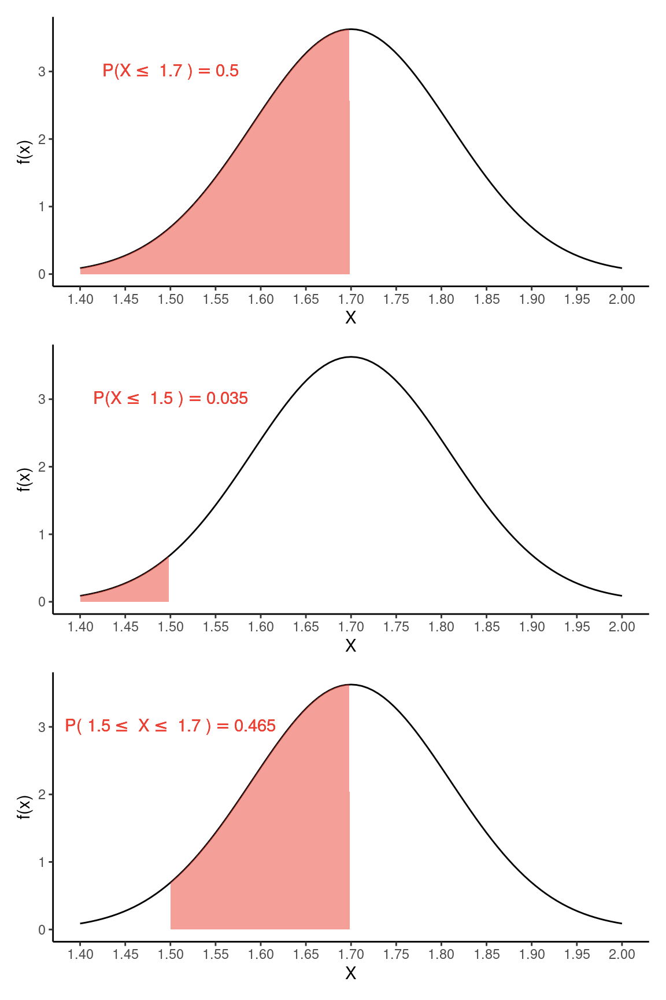
3.4 A distribuição normal padronizada
A integral para a função normal é difícil de ser calculada pois não tem solução analítica. Isto era um problema para os cientistas até meados do século \(XX\) que precisavam calcular valores de probabilidades para diferentes combinações de \(\mu\) e \(\sigma\). Naquele momento, a solução para facilitar a vida dos pesquisadores foi criar uma tabela descrevendo estas probabilidades em uma distribuição normal padronizada, ou seja para valores particulares de \(\mu\) e \(\sigma\). Padronizar aqui, significa transfomar cada valor \(x_i\) de modo que as observações resultantes tenham média igual a \(0\) e desvio padrão igual a \(1\).
Esta transformação é apicada a cada observação \(x_i\), obtendo-sem um valor de \(z_i\) correspondente por meio da expressão.
\[z_i = \frac{x_i - \mu}{\sigma}\]
A transformação \(Z\) é útil, pois ainda que seja difícil calcular as probabilidades para uma variável aleatória \(X\), após a transformação teremos uma variável \(Z\) para a qual os valores de probabilidade estão tabelados. Deste modo, \(Z\) é uma variável aleatória com \(\overline{z} = 0\) e \(s = 1\) tal que:
\[Z \sim \mathcal{N}(0,\,1)\]
Após a transformação \(Z\) nos exemplos sobre altura dos alunos e da temperatura mensal temos:
Code
ie <- ie %>%
mutate(ALTURA_z = (ALTURA - mean(ALTURA, na.rm = T))/sd(ALTURA, na.rm = T))
temp <- temp %>%
mutate(tm_z = (tm - mean(tm, na.rm = T))/sd(tm, na.rm = T))
altz_plt <- ggplot(ie, aes(x = ALTURA_z)) +
geom_histogram(aes(y = after_stat(density)),
fill = 'dodgerblue4',
color = 'black', bins = 10) +
stat_function(fun = dnorm,
args = list(mean = mean(ie$ALTURA_z, na.rm = T),
sd = sd(ie$ALTURA_z, na.rm = T))) +
labs(x = "Distribuição Z",
y = "Frequencia relativa") +
theme_classic()
tempz_plt <- ggplot(temp, aes(x = tm_z)) +
geom_histogram(aes(y = after_stat(density)),
fill = 'dodgerblue4',
color = 'black', bins = 10) +
stat_function(fun = dnorm,
args = list(mean = mean(temp$tm_z, na.rm = T),
sd = sd(temp$tm_z, na.rm = T))) +
labs(x = "Distribuição Z",
y = "Frequencia relativa") +
theme_classic()
(alt_plt | temp_plt) /
(altz_plt | tempz_plt)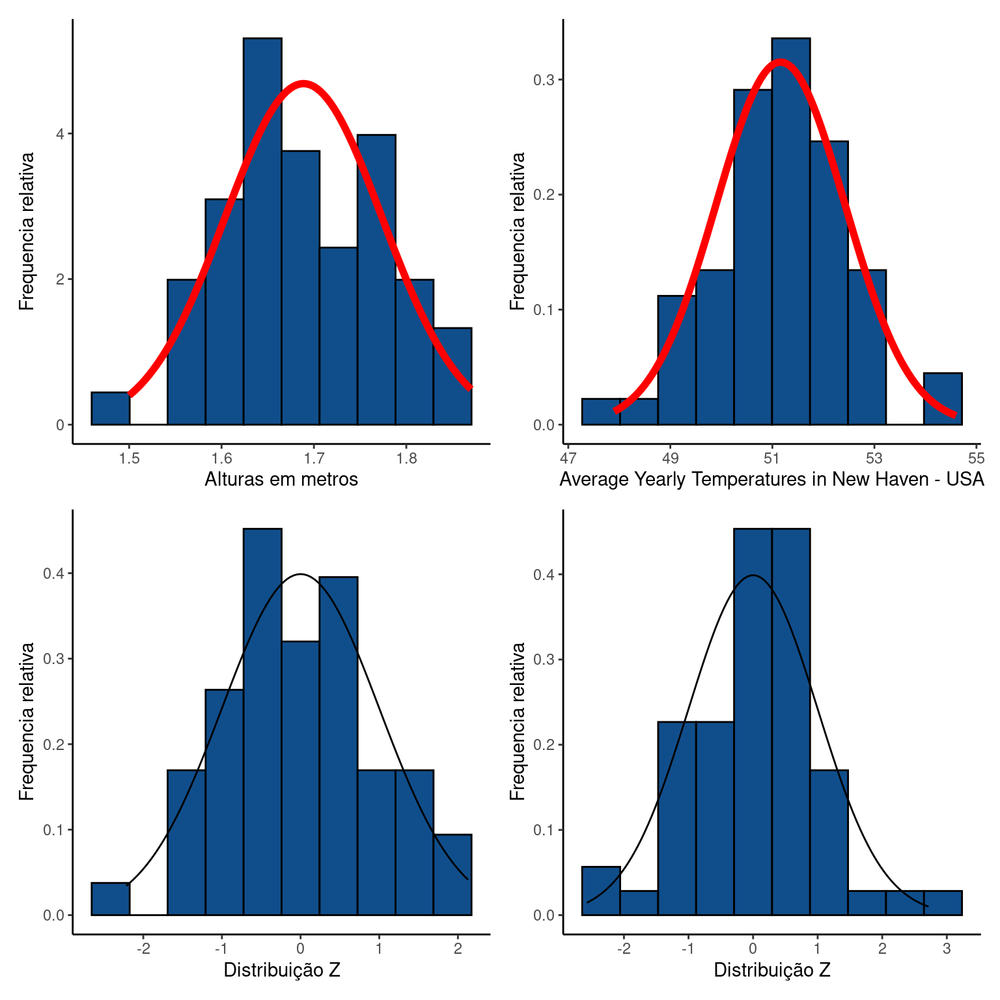
Escore Z
O Escore Z pode ser apresentado como uma medida de posição de uma observação na amostra (\(z_i\)) que representava uma medida relativa desta observação com relaçao à média e ao desvio padrão do conjunto de dados. Por exemplo, um valor de \(z_i = 2\) significa que a observação original \(x_i\) está \(2\) desvios padrões acima de sua respectiva média \(\mu\).
3.4.1 Probabilidades em uma distribuição normal padronizada
Nos dois exemplos anteriores, verifica-se que todas as observações estão situadas, aproximadamente, entre \(z = -3\) e \(z = +3\). De fato, a distribuição normal padronizada ou distribuição Z tem propriedades bem conhecidas. Como sua média é \(\mu = 0\) e seu desvio padrão é \(\sigma = 1\), a maior parte das observações fica limitada entre \(z = -3\) e \(z = +3\). Para ser exato, podemos descrever as probabilidades de uma observação estar dentro de alguns limites conhecidos. Por exemplo, \(95\%\) das observações estará entre \(z = -1.96\) e \(z = +1.96\), isto é,
\[P(-1.96 \le Z \le +1.96) = 0.95\]
De forma similar, \(90\%\) da área central da curva se encontra entre \(z = -1.64\) e \(z = +1.64\). Estes e outros limites na distribuição normal padronizada podem ser verificados na figura abaixo.
Code
# Ver função completa no arquivo 'scripts/normal_empirica_gg.r'
normal_empirica_gg(xlabels = c(-4:4))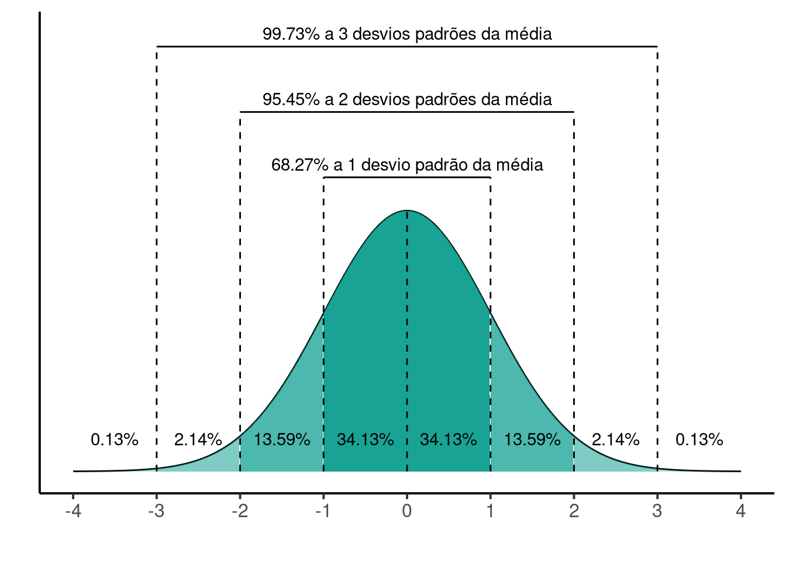
Vamos exemplificar o uso da distribuição \(Z\) no cálculo de probabilidades utilizando os dados de altura dos alunos. Para estes dados, iremos encontrar \(P(X \le 1.5)\). Este procedimento consiste de:
Code
mu <- 1.7
dp <- 0.11
x <- 1.5
z_1.5 <- (x - mu)/dp- Transformar \(x = 1.5\) em \(z_{1.5}\) por meio de \(z_{1.5} = \frac{1.5 - 1.7}{0.11} = -1.818\);
Code
mu <- 1.7
dp <- 0.11
x <- 1.5
z_1.5 <- (x - mu)/dp
z_1.5[1] -1.818182- Encontrar encontrar \(P(Z \le z_{1.5}) = P(Z \le -1.818) = 0.0345182\).
Code
pnorm(q = z_1.5, mean = 0, sd = 1, lower.tail = TRUE)[1] 0.03451817Compare este resultado com o obtido anteriormente para verificar que é equivalente a \(P(X \le 1.5)\).
A transformação \(Z\)
Suponha uma variável aleatória \(X\) nomalmente distribuída conforme \(X \sim \mathcal{N}(\mu,\,\sigma^2)\). Desejamos encontrar \(m\) tal que:
\(P(X \le m) = \alpha\)
\(\alpha\) aqui representa um valor de probabilidade qualquer determinada pela área na distribuição normal abaixo de \(m\).
Ao aplicar a transformação \(Z\) teremos:
\(P(\frac{X - \mu}{\sigma} \le \frac{m - \mu}{\sigma}) = \alpha\)
como \(\frac{X - \mu}{\sigma} = Z\) temos que:
\(P(Z \le \frac{m - \mu}{\sigma}) = \alpha\)
Por meio desta expressão, você pode encontar \(m\) uma vez fornecido \(\alpha\) ou encontrar \(\alpha\), desde que seja fornecido \(m\).
O mesmo vale se quisermos encontrar a probabilidade determinada por um intervalo definido de \(m\) até \(n\) (\(m < n\)). Para isto fazemos:
\(P(m \le X \le n) = \alpha\)
\(P(\frac{m - \mu}{\sigma} \le \frac{X - \mu}{\sigma} \le \frac{n - \mu}{\sigma}) = \alpha\)
\(P(\frac{m - \mu}{\sigma} \le Z \le \frac{n - \mu}{\sigma}) = \alpha\)
3.4.2 Tabela \(Z\)
Ao utilizarmos um software estatístico não é necessário fazer esta transformação. A transformação \(Z\) era necessária na ausência de ferramentas computacionais, ou seja, quando a única opção era utilizarmos a Tabela \(Z\) para evitar cálculos tediosos considerando cada combinação de \(\mu\) e \(\sigma\).
A Tabela Z disponibiliza os valores de probabilidade para um grande número de valores e é apresentada na grande maioria dos livros de estatística.
Você pode utilizar a Tabela \(Z\) para encontrar \(P(X \le 1.5)\). Note que o valor transformado é \(z_{1.5} = -1.818\). Este será o valor que iremos buscar na tabela. Para isto:
Encontre a página que oferece valores negativos, uma vez que \(z_{1.5} < 0\);
Na coluna 1 desta página (coluna z) encontre a linha -1.8 que refere-se à unidade, e à primeira casa decimal de \(z_{1.5}\);
Encontre a coluna 0.02 (quarta coluna da tabela \(Z\)) que apresenta a segunda casa decimal de \(z_{1.5}\). Isto nos leva ao valor mais próximo do calculado (\(z_{1.5} = -1.818\)).
Cruze a linha escolhida no item 3 com a coluna escolhida no item 4. Você irá encontrar o valor \(0,0344\). Este valor e a probabilidade de obtermos um valor de \(z \le 1.5\) na distribuição normal padronizada, ou seja, \(P(Z \le z_{1.5})\). A diferença entre este valor e o encontrado com o R se deve unicamente ao limite de precisão na Tabela \(Z\).
3.5 Exercícios resolvidos
Importe o conjunto de dados rhamdioglanis.csv
rh <- read_delim('datasets/rhamdioglanis.csv', delim = ';',
locale = locale(decimal_mark = ','))3.5.1 Distribuição de comprimento
As comunidades de peixes em riachos de cabeceira são compostas por espécies de pequeno porte. Rhamdioglanis transfasciatus é uma destas espécies, desconhecida do público em geral, porém muito abundante em pequenos riachos bem preservados. Dados de captura sugerem que o tamanho dos indivíduos pode ser razoavelmente bem descrito por um modelo de distribuição normal.
Code
ggplot(rh, aes(x = Comprimento)) +
geom_histogram(aes(y = after_stat(density)),
fill = 'dodgerblue4', color = 'black', bins = 15) +
stat_function(fun = dnorm, args = list(mean = mean(rh$Comprimento),
sd = sd(rh$Comprimento))) +
labs(x = 'Comprimento de Rhamdioglanis transfasciatus (cm)',
y = 'Densidade') +
theme_classic()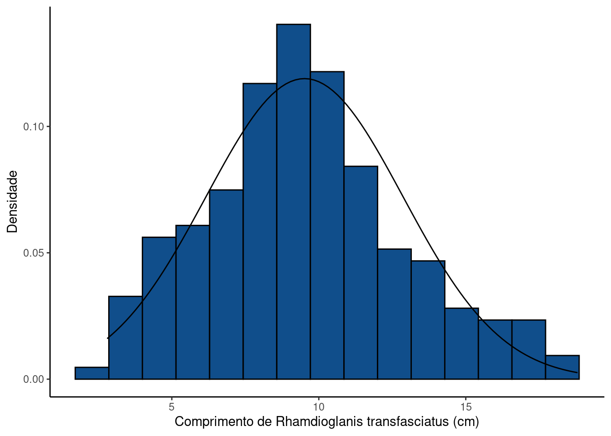
Suponha o comprimento desta espécie tenha uma distribuição normal com \(\mu = 10\) cm e \(\sigma = 3\) cm. Encontre:
- A probabilidade de capturar um indivíduo maior de 14 cm de comprimento, \(P(X \ge 14)\).
- A probabilidade de capturar um indivíduo menor de 5 cm de comprimento, \(P(X \le 5)\).
- A probabilidade de encontrar um indivíduo entre 5 e 14 cm, \(P(5 \le X \le 14)\).
- Se um trecho de riacho contém 800 indivíduos, quantos são maiores que 14 cm de comprimento.
RESOLUÇÃO
\(P(X \ge 14)\)
Vamos encontrar o respectivo valor de \(Z\) pela transformação
\(z_{14} = \frac{14 - 10}{3} = 1.33\)
Na tabela \(Z\) procuramos a linha que mostra a unidade e \(1^a\) casa decimal de \(1.33\) e em seguida encontramos a coluna que representa a \(2^a\) casa decimal de \(1.33\). Cruzando linha e coluna encontramos o valor \(0,9082\). Note que este valor representa a área abaixo de 1.33, isto é, \(P(Z \le z_{14})\). No entanto, queremos \(P(Z \ge z_{14})\) que representa a área da curva acima de \(1.33\). Para isto basta fazermos \(1 - 0,9082\).
Deste modo, \(P(Z \ge z_{14}) = 1 - P(Z \le z_{14}) = 1 - 0,9082 = 0.0918\)
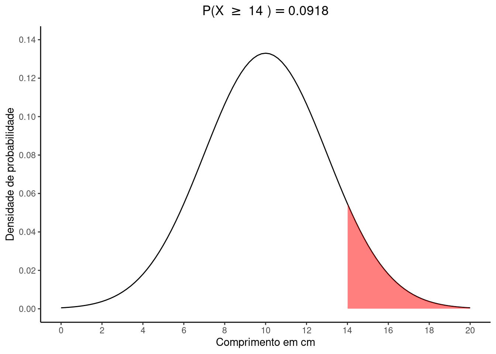
ii. \(P(X \le 5)\)
\(z_{5} = \frac{5 - 10}{3} = -1.67\)
Na tabela \(Z\) procuramos a linha que mostra a unidade e \(1^a\) casa decimal de \(-1.67\) e em seguida encontramos a coluna que representa a \(2^a\) casa decimal de \(-1.67\). Cruzando linha e coluna encontramos o valor \(0,0475\) que representa a área desejada.
Deste modo, \(P(X \le 5) = P(Z \le z_{5}) = 0,0475\)
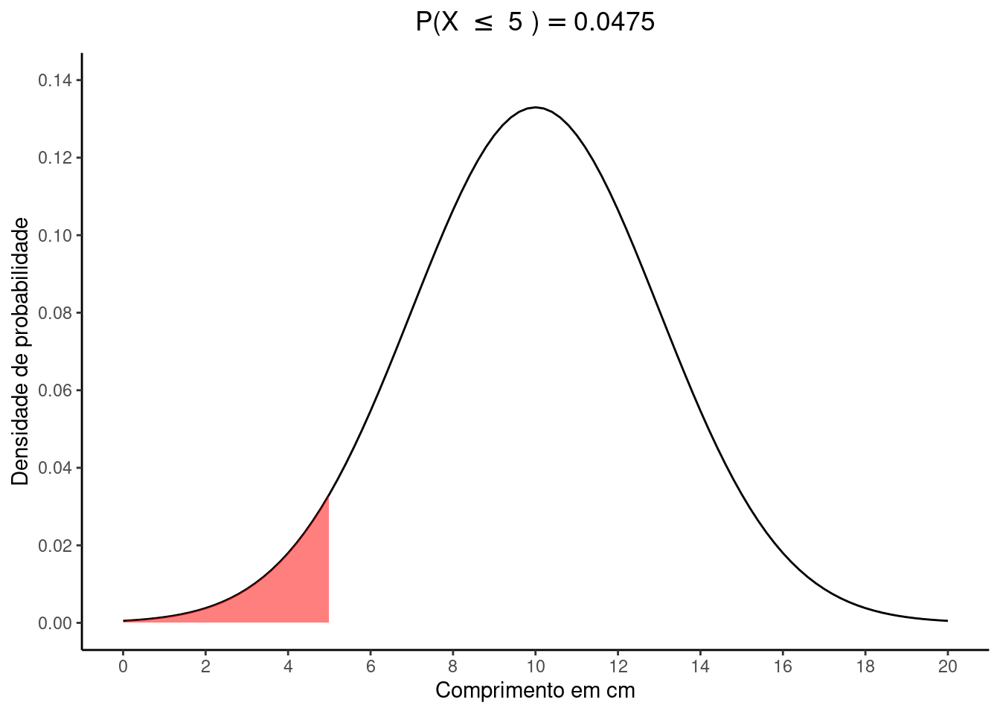
iii. \(P(5 \le X \le 14)\)
Vamos subtrair as quantias \(P(Z \le 14) - P(Z \le 5)\)
Estes valores já foram encontrados nos itens anteriores, de modo que basta fazermos:
\(P(5 \le X \le 14) = 0,9082 - 0,0475 = 0.8607\)
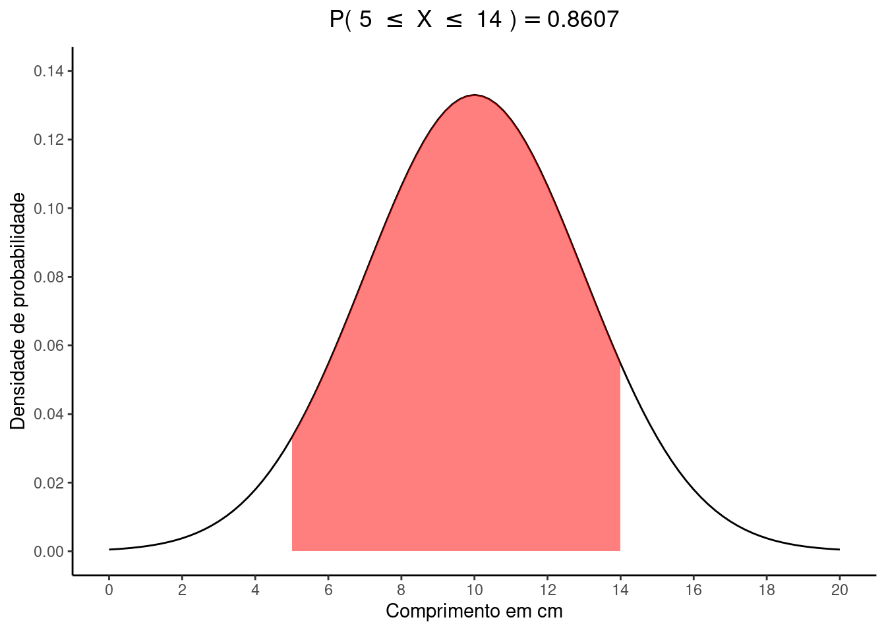
iv. Indivíduos maiores que 14 cm de comprimento
Se a proporção de indivíduos acima de 14 é \(P(X > 14) = 0.0918\) e a população tem \(N = 800\) indivíduos, teremos:
\(0.0918 \times 800 = 73\) indivíduos maiores que 14 cm.
RESOLUÇÃO no R
O exercício pode ser resolvido pelo R por meio da função pnorm.
mu <- 10
sigma <- 3
N <- 800
la <- 14
lb <- 5i. \(P(Z \ge 14)\)
pnorm(q = la, mean = mu, sd = sigma, lower.tail = FALSE)[1] 0.09121122ii. \(P(Z \le 5)\)
pnorm(q = lb, mean = mu, sd = sigma, lower.tail = TRUE)[1] 0.04779035iii. \(P(5 \le X \le 14)\)
diff(
pnorm(q = c(lb, la),
mean = mu,
sd = sigma,
lower.tail = TRUE)
)[1] 0.8609984iv. Número de indivíduos maiores que \(14\) cm de comprimento
pg_la <- pnorm(q = la, mean = mu, sd = sigma, lower.tail = FALSE)
N * pg_la[1] 72.968983.5.2 Intervalos em uma distribuição normal
Suponha variável aleatória \(X\) normalmente distribuída conforme com \(\mu = 50\) e \(\sigma = 10\). Encontre:
- O valor de \(a\) tal que \(P(X \le a) = 0,10\).
- O valor de \(b\) tal que \(P(X \ge b) = 0,85\).
- O intervalo simétrico ao redor da média delimitado por \(c\) e \(d\) (\(c < d\)), que contém \(95\%\) da área sob a curva.
- O valor de \(e\) tal que \(P(50-e \le X \le 50+e) = 0.99\)
RESOLUÇÃO
Veja que neste exercício, foram oferecidos valores de probabilidades e solicitado que você obtivesse os limites em uma distribuição normal específica. Este processo é oposto ao do excercício anterior.
i. O valor de \(a\)
Se \(P(X \le a) = 0,10\), a área da curva abaixo de \(a\) é \(0,10\). Procurando por este valor na tabela \(Z\) vemos que o valor mais próximo é \(0,1003\) que corresponde a um escore \(z = -1,28\). Vamos utilizar este valor para encontrar sua correspondência para a variável aleatória \(X\) que tem média \(\mu = 50\) e desvio padrão \(\sigma = 10\).
\(z = \frac{a - \mu}{\sigma} :: -1,28 = \frac{a - 50}{10}\)
\(a = (-1,28 \times 10) + 50 = 37.2\)
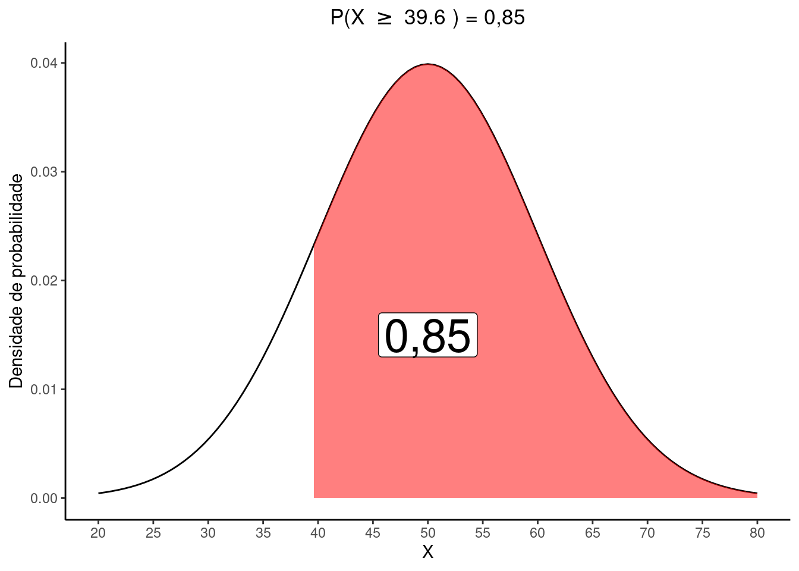
ii. O valor de \(b\)
Se \(P(X \ge b) = 0,85\), a área abaixo de \(b\) que devemos encontrar na tabela \(Z\) é \(1 - 0,85 = 0.15\). Vemos que o valor mais próximo é \(0,1492\) que corresponde a \(z = -1,04\). Ao utilizar este resultado na expressão abaixo temos:
\(z = \frac{b - \mu}{\sigma} :: -1,04 = \frac{b - 50}{10}\)
\(b = (-1,04 \times 10) + 50 = 39.6\)
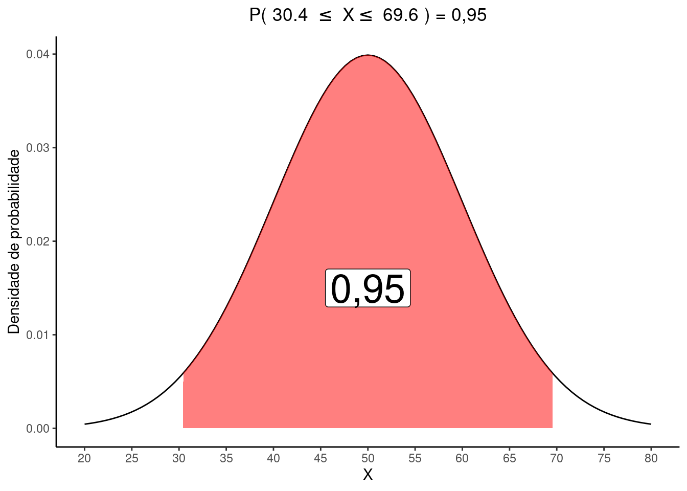
O intervalo simétrico ao redor da média delimitado por \(c\) e \(d\) (\(c < d\)), que contém \(95\%\) da área sob a curva.
Se entre \(c\) e \(d\) está \(95\%\) da área da curva, temos uma área de \(1 - 0,95 = 0,05\) fora da curva. Como o intervalo é simétrico, teremos \(0,025\) abaixo de \(c\) e \(0,025\) acima de \(d\).
Ao procurar na tabela \(Z\) por \(0,025\) encontraremos \(z = -1,96\) que equivale ena distribuição de X a:
\(z = \frac{c - \mu}{\sigma} :: -1,96 = \frac{c - 50}{10}\)
\(c = (-1,96 \times 10) + 50 = 30.4\)
Novamente, como o intervalo é simétrico e a dsitribuição de \(Z\) é centrada em zero, o ponto \(d\) será de +\(1,96\) que resulta em:
\(z = \frac{d - \mu}{\sigma} :: +1,96 = \frac{d - 50}{10}\)
\(d = (+1,96 \times 10) + 50 = 69.6\)

iv. O valor de \(e\) tal que \(P(50-e \le X \le 50+e) = 0.99\)
Podemos fazer aqui:
\(P(50-e \le X \le 50+e) = P(\frac{50-e - \mu}{\sigma} \le \frac{X-\mu}{\sigma} \le \frac{50+e-\mu}{\sigma}) = 0.99\)
como \(\mu = 50\) e \(\sigma = 10\) temos:
\(P(\frac{-e}{10} \le Z \le \frac{e}{10}) = 0.90\)
Como a área central ocupa \(0,99\) da distribuição, restam \(0,005\) na cauda superior e \(0,005\) na cauda inferior:
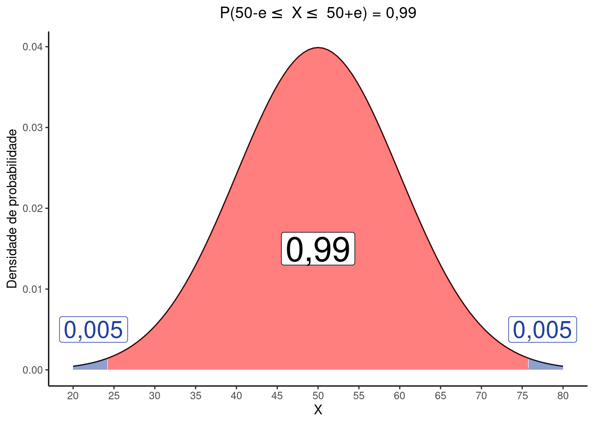
Para encontrar \(-e\) buscamos por \(0,005\) na tabela \(Z\) e encontramos \(0,0051\) como valor mais próximo, referente a \(z_{-e} = -2,57\). Substituindo na equação temos:
\(\frac{-e}{10} \le -2,57 :: -e = -2,57 \times 10 :: e = 25,7\)
*Note na figura acima que os limite das áreas em azul são:
\(\mu - e = 50 - 25.7 = 24.3\) e
\(\mu - e = 50 + 25.7 = 75.7\)
RESOLUÇÃO no R
O exercício pode ser resolvido pelo R por meio da função qnorm.
Em
qnorm, o ‘q’ vem de quantis da distribuição normal.
mu = 50
sigma = 10
(a <- qnorm(p = 0.10, mean = mu, sd = sigma, lower.tail = TRUE))[1] 37.18448(b <- qnorm(p = 1-0.85, mean = mu, sd = sigma, lower.tail = TRUE))[1] 39.63567(c <- qnorm(p = (1-0.95)/2, mean = mu, sd = sigma, lower.tail = TRUE))[1] 30.40036(d <- qnorm(p = (1-0.95)/2, mean = mu, sd = sigma, lower.tail = FALSE))[1] 69.59964(e <- -qnorm(p = (1-0.99)/2, mean = mu, sd = sigma, lower.tail = TRUE) + 50)[1] 25.758293.5.3 Quantos desvios padrões?
Suponha uma variável aleatória normalmente distribuída representada por \(X \sim \mathcal{N}(\mu,\,\sigma^2)\), determine:
- O valor de \(a\) tal que \(P(X < a) = 0,20\).
- \(P(X \le \mu + 2\sigma)\).
- O valor de \(c\) tal que \(P(\mu -c\sigma \le X \le \mu +c\sigma) = 0.99\)
RESOLUÇÃO
i. O valor de \(a\) tal que \(P(X < a) = 0,20\).
\(P(X < a) = P(\frac{X - \mu}{\sigma} < \frac{a - \mu}{\sigma}) = P(Z < \frac{a - \mu}{\sigma}) = 0,20\)
Procurando pelo valor de \(z\) que delimita \(0,20\) da área abaixo de \(a\) encontramos por \(z = -0,84\), de modo que:
\(-0,84 = \frac{a - \mu}{\sigma}\)
\(a = \mu -0,84\sigma\)
ii. \(P(X \le \mu + 2\sigma)\)
A expressão \(\mu + 2\sigma\) nos diz que o limite de interesse está \(2\) desvios padrões acima de \(\mu\). Ao procurar pelo valor de \(z = 2,0\) na tabela \(Z\), veremos que a probabilidade de interesse é \(P(X \le \mu + 2\sigma) = 0,9772\)
iii. O valor de \(c\) tal que \(P(\mu -c\sigma \le X \le \mu +c\sigma) = 0.99\)
Desenvolvendo esta expressão teremos
\(P(-c \le \frac{X - \mu}{\sigma} \le +c) = P(-c \le Z \le +c) = 0.99\)
Fora deste intervalo simétrico, teremos uma área de \(0,005\) na cauda inferior e \(0,005\) na cauda superior da distribuição \(Z\).
Ao procurar por \(0,005\) na tabela \(Z\) encontramos \(z = -2,57\), de modo que \(c = 2,57\).
3.6 Exercícios propostos
Leia o tópico 7.4.2 O Modelo Normal em Bussab and Morettin (2010) (pag. 176 a 181) e faça os exercícios 14 a 20 da página 184.
Vídeo-aulas
Bussab, Wilton de O., and Pedro A. Morettin. 2010. Estatśitica Básica. 6a ed. Saraiva.